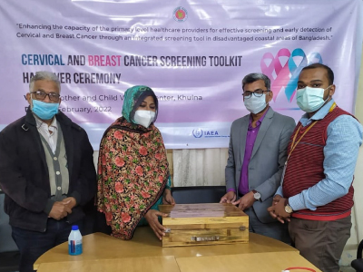
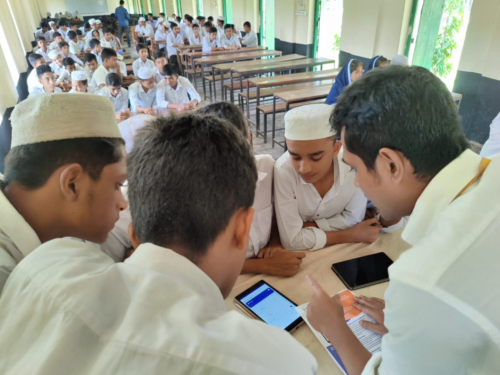

I am a PhD candidate in Community Health at the University of Illinois Urbana-Champaign. I work with
Dr. Chung-Yi Chiu, in the area of digital health interventions and human-computer interaction for
health. My research focuses on designing patient portals and mHealth solutions that support digital
health-seeking behavior, self-efficacy, and sustained engagement.
I have developed digital platforms and conducted implementation research projects in Bangladesh. Now
I have been contributing to multiple NIH-funded projects on AI-supported health tools. Before being
involved in public health interventions, I completed my bachelor in dentistry and was a licensed
dentist in Bangladesh.
"Building digital health solutions that bridge gaps, empower communities, and transform care for a
healthier and equitable world.”
Projects

Enhancing Cervical & Breast Cancer Screening in Bangladesh
We developed a biodegradable screening toolkit and training program
to strengthen cervical and breast cancer screening services in
Khulna and Satkhira, Bangladesh.
Friendship 3-Tier Health Program Evaluation
We evaluated Friendship's innovative 3-Tier health care
model in improving access to quality care in hard-to-reach riverine and
coastal communities of Bangladesh.

Mukhorito: Adolescent SRHR mHealth Platform
We designed and developed Mukhorito, a digital platform co-created with adolescents
to enhance knowledge, awareness, and decision-making around sexual and reproductive health
in Bangladesh.
×
Enhancing Cervical & Breast Cancer Screening in Bangladesh
This project introduced an eco-friendly bamboo-based toolkit for VIA (Visual Inspection with
Acetic Acid) and CBE (Clinical Breast Examination). An 8-day training program was
organized
for healthcare providers in Khulna and Satkhira Maternal and Child Welfare Centres. Providers were
trained on
performing VIA and CBE, patient counseling, peer motivation, and digital data management.
Mentorship was provided through hybrid sessions with master trainers, and infrastructural support was
extended
to re-establish screening centres that had paused during COVID-19. The intervention received positive
feedback
on feasibility and usability and has strong potential for nationwide scale-up.
×
Friendship 3-Tier Health Program Evaluation
Friendship’s health program addresses gaps in primary and secondary care in remote char
(river island) and coastal areas using a three-tier approach:
Tier 1: Community Health Workers (CHWs) provide basic preventive services,
health education, and referrals at the household level.
Tier 2: Satellite clinics and trained paramedics deliver primary healthcare
and maternal, newborn, and child health services.
Tier 3: Friendship Floating Hospitals and referral centers ensure access to
specialized medical care and surgical services.
Our evaluation examined service coverage, patient satisfaction, referral efficiency, and
health outcomes. The program demonstrated strong improvements in immunization uptake,
antenatal and postnatal care access, and early detection of communicable and non-communicable diseases.
Findings highlighted the importance of community engagement, integrated referral pathways,
and telemedicine support for sustainability. The model offers a scalable blueprint for
strengthening health systems in climate-vulnerable, underserved populations.
×
Mukhorito: Adolescent SRHR mHealth Platform
Mukhorito is an innovative mHealth intervention that addresses the
lack of accessible, adolescent-friendly sexual and reproductive health (SRHR) information
in Bangladesh. The app was developed using a participatory co-design process
with adolescents, educators, and health experts, ensuring content relevance and cultural
sensitivity.
Guided by the Intervention Mapping framework and the
Health Action Process Approach (HAPA), Mukhorito integrates
evidence-based behavior change strategies with engaging digital features, including:
Interactive learning modules on SRHR, gender, and relationships
Peer discussion forums and Q&A with experts
Gamified quizzes and challenges to reinforce learning
Anonymous, stigma-free access to information and resources
In a pilot evaluation, Mukhorito demonstrated significant improvements in SRHR knowledge
and awareness among adolescents. Collaboration with the Bangladesh government and
private investors supported sustainability and scale-up, making Mukhorito a
pioneering example of technology-driven adolescent health promotion.
Latest Updates
Presentation at UIUC
I recently presented my work on mHealth apps for adolescent health at UIUC.
Human Touch in Maternal Care
Excited to share two co-authored papers evaluating the "Welcome Person"
intervention in Bangladesh.
This simple, non-clinical support role was designed to greet and guide patients, transforming
maternal care
experiences in overstretched facilities.
Quantitative findings showed improved satisfaction and interpersonal care
scores. Qualitative insights revealed how mothers, families, and providers felt a new sense of
warmth,
trust,
and dignity in facilities.
Together, these studies highlight the power of low-cost, culturally resonant interventions to
make
healthcare more humane.
First-Author Publication: Evaluating Friendship 3-Tier Healthcare Model
My first-author paper, “Reaching the Unreachable”, is now published in the Archives of
Public Health 🎉. It evaluates Friendship’s multidimensional 3-Tier
healthcare model
addressing service gaps in hard-to-reach northern riverine Bangladesh.
From leading protocols, contracts, and logistics to fieldwork across hopping across chars via
boats, tractors,
and even horse carts,
this journey was transformative and humbling.
The model trains community medic aides, uses mHealth for 24/7
doctor access,
paramedics for monthly services, and hospital ships for specialized care.
Honored to receive the Karin A. Rosenblatt Community Health Graduate
Scholarship from the
Department of Health and Kinesiology, College of Applied Health Sciences at Illinois.
This award recognizes graduate students advancing community health. I’m
grateful for the
encouragement as I continue researching digital health interventions, AI-driven
self-management tools,
and health equity in both the U.S. and Bangladesh.
Thank you to my advisor, Dr. Chung-Yi Chiu, and the Health Promotion and
Rehabilitation Lab
for their constant support and mentorship.
Contact Me
Feel free to reach out via social media or send me a message directly.